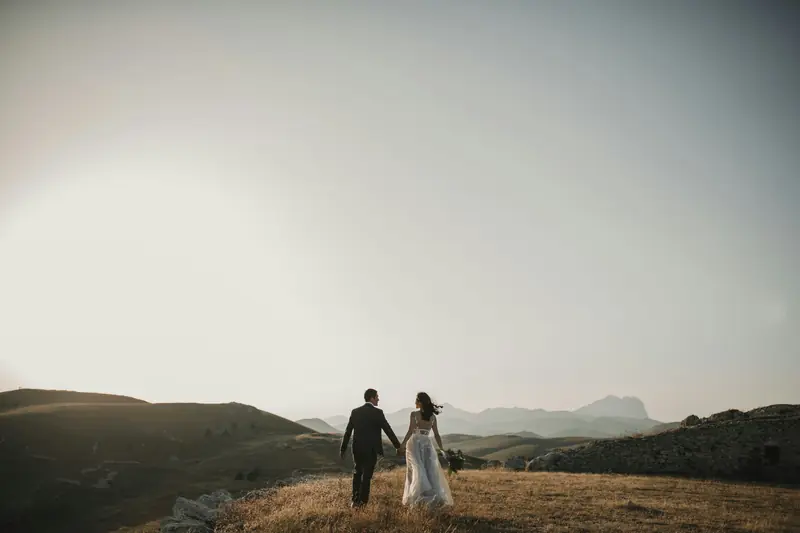
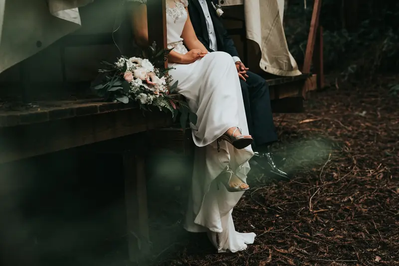
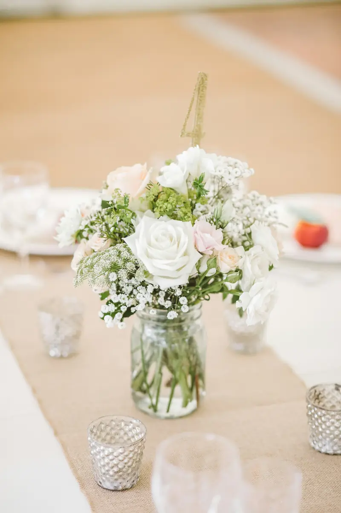
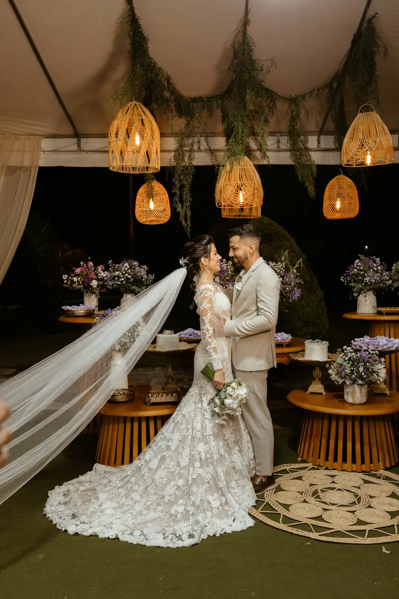

Room to Breathe
Open spaces, soft light and a little room to breathe. A photographic study in people and place.





This gallery combines credited stock photographs to demonstrate the website’s story experience. It represents a visual direction, rather than a client wedding. View image credits.
Tell me about your plans.
A place, a date, a little about the two of you.